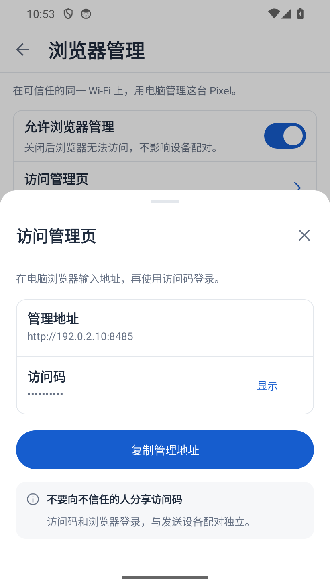
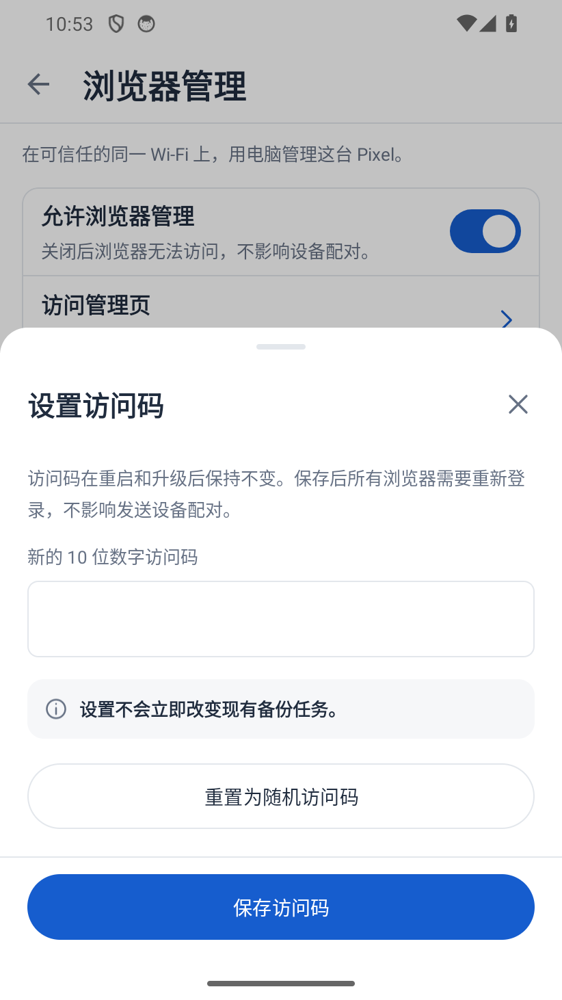
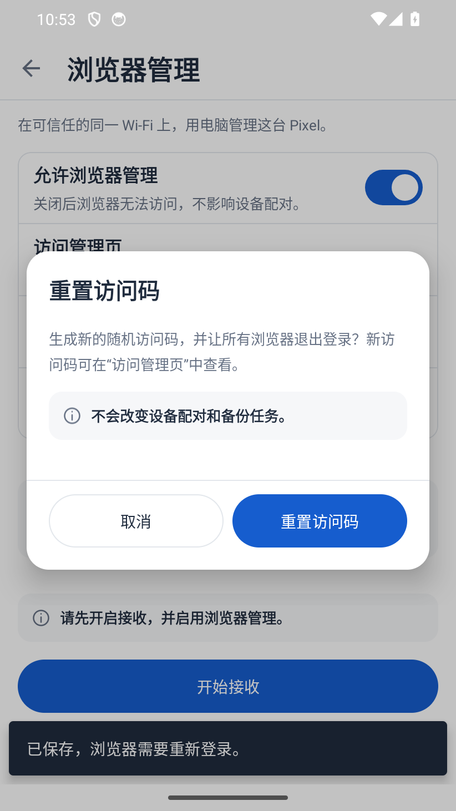
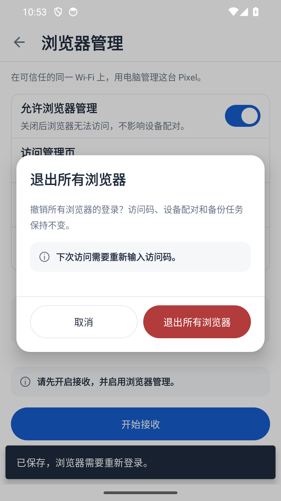
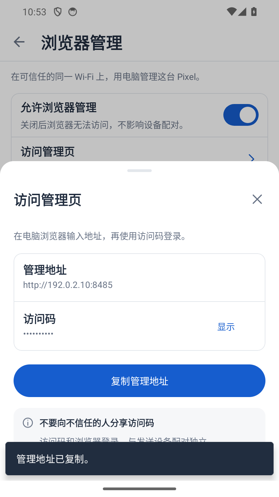
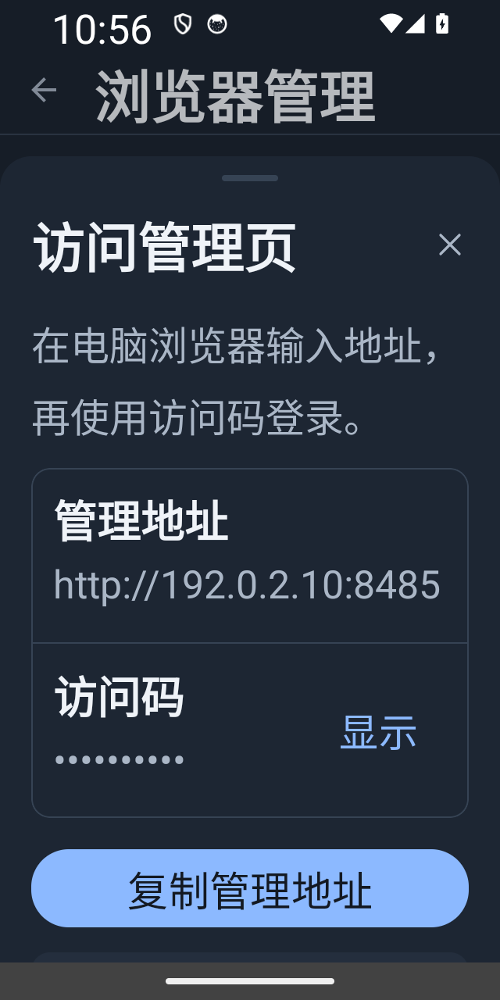
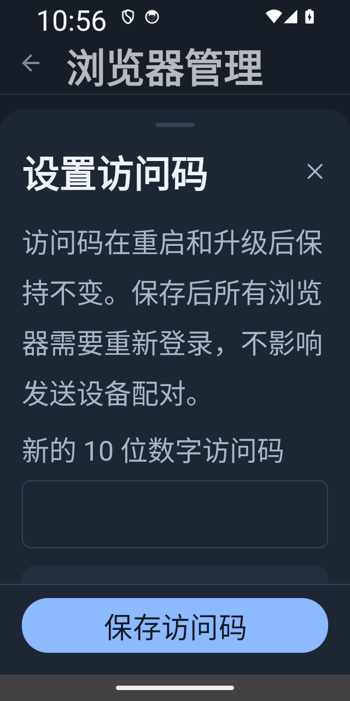
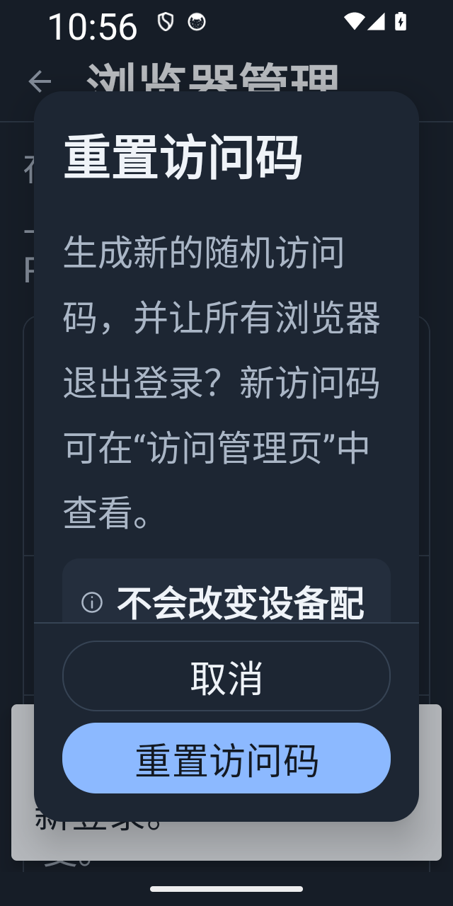
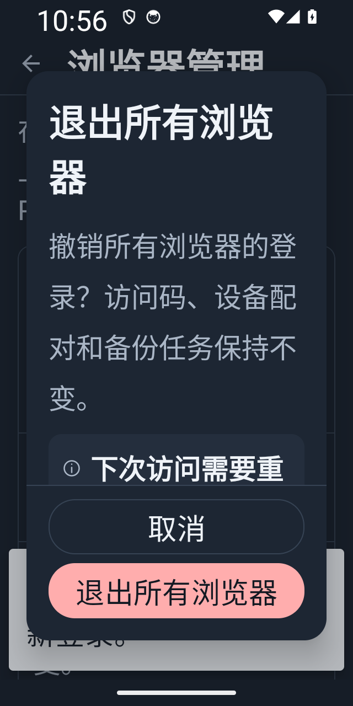

2026-10-03 · 原型代码对照后的原生实现，含当前窗口复制反馈与首行图标对齐修复，待用户验收。以下均为隔离模拟器的实际窗口截图，使用合成地址与访问码；不是 Pixel 真机截图。其余二三级页面尚未全部迁移。
交互设计稿 · 验证记录 · 组件与间距契约
独立验收包默认遮蔽访问码；主动显示时启用截图保护。正式应用仍禁止敏感弹层截图。





320dp / 2 倍字体 / 深色。正文滚动，提交区固定；截图只展示当前滚动位置。



